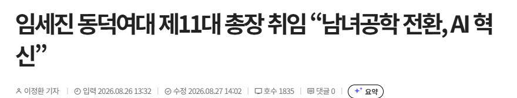
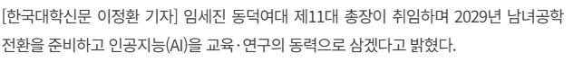

임세진 동덕여대 제11대 총장 취임 “남녀공학 전환, AI 혁신” < 인물·동정 < 뉴스 < 기사본문 - 한국대학신문 - 411개 대학을 연결하는 '힘'
내일 개강하고 무슨 일이 생길까?


임세진 동덕여대 제11대 총장 취임 “남녀공학 전환, AI 혁신” < 인물·동정 < 뉴스 < 기사본문 - 한국대학신문 - 411개 대학을 연결하는 '힘'
내일 개강하고 무슨 일이 생길까?
인서울 불패
오늘 개강 아님?
여대면 일반 대학이랑 학과가 좀 달라?
잘몰라서 물어봄
일단 저긴 "약대"가 있음
보통 대학은 공대가 큰데 여대는 공대가 아예 없거나 작음
남녀공학 대형 종합대학이면 기계공학, 전기전자, 건축, 토목, 조선해양, 자동차 같은 전통 공학 계열이 촘촘하게 깔려 있는 반면,
여대는 그 자리에 아동·가족, 의류, 식품영양, 디자인, 교육, 여성학 같은 전공이 들어가는 식입니다
누가 가려고하겠나 저런곳을 ㅋㅋ
페미가 자랑스러운 애들은 가겠지
'인서울'
'약대'
학꾸 시즌2 가는거야?
남자 신입생은 선배들이 전부 여자네
싱기방기